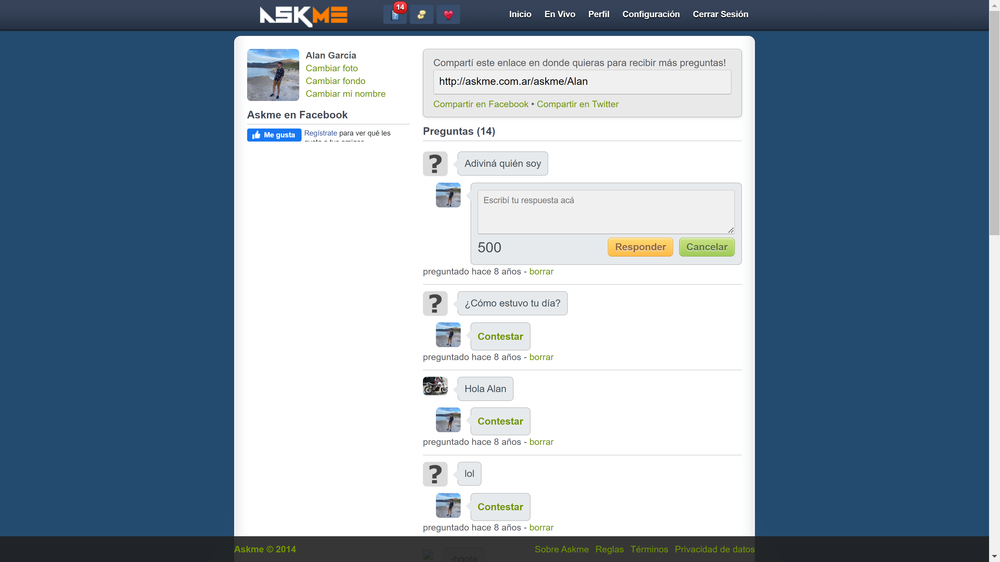
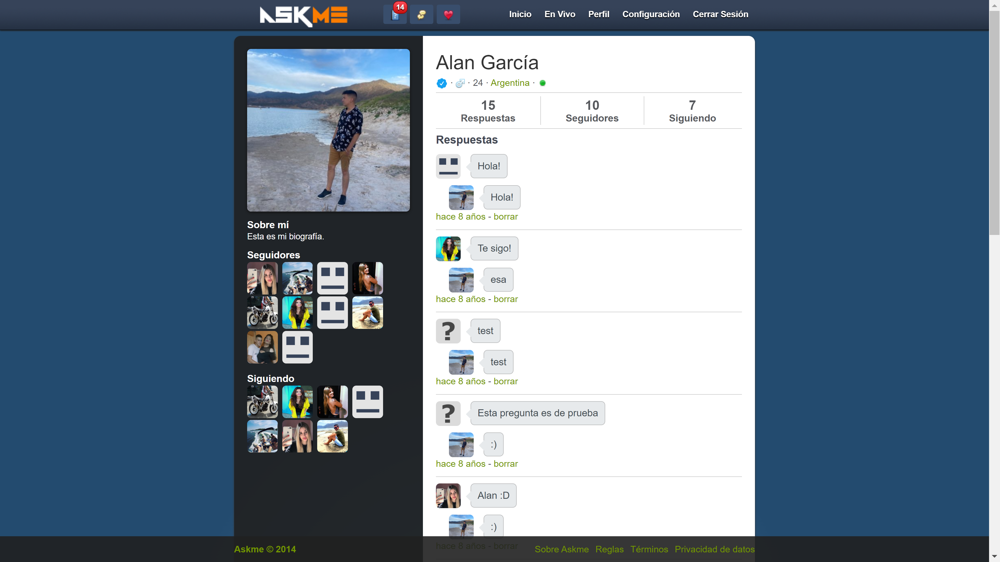

<div id="ajax-page" class="ajax-page-content">
        <div class="ajax-page-wrapper">
                <div class="ajax-page-nav">
                        <div class="nav-item ajax-page-prev-next">
                                <a class="ajax-page-load" href="portfolio-2.html"><i class="lnr lnr-chevron-left"></i></a>
                                <a class="ajax-page-load" href="portfolio-4.html"><i class="lnr lnr-chevron-right"></i></a>
                        </div>
                        <div class="nav-item ajax-page-close-button">
                                <a id="ajax-page-close-button" href="#"><i class="lnr lnr-cross"></i></a>
                        </div>
                </div>

                <div class="ajax-page-title">
                        <h1>AskMe</h1>
                </div>

                <div class="row">
                        <div class="col-sm-8 col-md-8 portfolio-block">
                                <div class="owl-carousel portfolio-page-carousel">
                                        <div class="item">
                                                
                                        </div>
                                        <div class="item">
                                                
                                        </div>
                                        <div class="item">
                                                
                                        </div>
                                </div>


                                <script type="text/javascript">
                                        jQuery(document).ready(function($){
                                                $('.portfolio-page-carousel').imagesLoaded(function(){
                                                        $('.portfolio-page-carousel').owlCarousel({
                                                                smartSpeed:1200,
                                                                items: 1,
                                                                loop: true,
                                                                dots: true,
                                                                nav: true,
                                                                navText: false,
                                                                margin: 10,
                                                                autoHeight:true
                                                        });
                                                });
                                        });
                                </script>
                        </div>

                        <div class="col-sm-4 col-md-4 portfolio-block">
                                <!-- Project Description -->
                                <div class="project-description">
                                        <div class="block-title">
                                                <h3>Descripción</h3>
                                        </div>
                                        <ul class="project-general-info">
                                                <li><p><i class="fa fa-user"></i> Alan García</p></li>
                                                <li><p><i class="fa fa-globe"></i> <a href="#" target="_blank">www.askme.com</a></p></li>
                                                <li><p><i class="fa fa-calendar"></i> 01 mayo, 2014</p></li>
                                        </ul>

                                        <p class="text-justify">Red Social de preguntas y respuestas</p>
                                        <p class="text-justify">El sitio permitía hacer preguntas en anonimato, dar me gusta a las respuestas y recibir también preguntas. Las preguntas pueden ser recibidas anónimamente.</p>
                                        <p class="text-justify">Para esto se debe registrar en la red social, que permite configurar la cuenta, usar una foto de perfil y responder todo tipo de preguntas de forma anónima.</p>
                                        <p class="text-justify">Existía la posibilidad de ver, en vivo, todas las respuestas que los usuarios iban dando a las preguntas.</p>
                                        <div class="tags-block">
                                                <div class="block-title">
                                                        <h3>Tecnología</h3>
                                                </div>
                                                <ul class="tags">
                                                        <li><a>HTML</a></li>
                                                        <li><a>CSS</a></li>
                                                        <li><a>jQuery</a></li>
                                                        <li><a>Ajax</a></li>
                                                        <li><a>PHP7</a></li>
                                                </ul>
                                        </div>

                                        <div class="btn-group share-buttons">
                                                <div class="block-title">
                                                        <h3>Share</h3>
                                                </div>
                                                <a href="#" target="_blank" class="btn"><i class="fab fa-facebook-f"></i> </a>
                                                <a href="#" target="_blank" class="btn"><i class="fab fa-twitter"></i> </a>
                                                <a href="#" target="_blank" class="btn"><i class="fab fa-dribbble"></i> </a>
                                        </div>

                                </div>
                        </div>
                </div>
        </div>
</div>